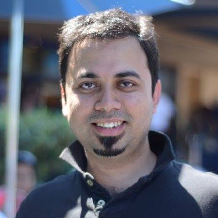

|  |
Avik Chaudhuri Software Engineer, Facebook [Flow] |
I created Flow and currently lead the development of Flow at Facebook. Previously, I was a member of the Programming Language Research Group at Adobe Systems, where I focused on the future of the ActionScript language and the Flash platform, and for a while, served on the JavaScript standardization committee.
My research interests span the areas of programming languages and computer security. Prior to joining the industry, I worked in the Programming Languages group at UMD as a post-doctoral research associate with Jeffrey Foster. Between 2004 and 2008 I earned a PhD under the tutelage of Martín Abadi. Further back, I did undergraduate studies in Computer Science and Engineering at IIT Delhi, where I was advised by Sanjiva Prasad. In between, I have spent various summers at MSR, NICTA, and INRIA.